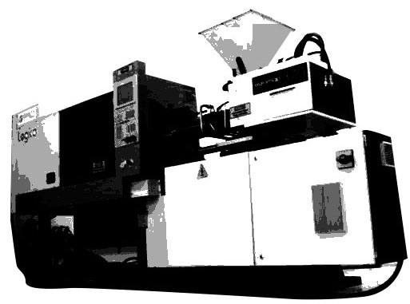

GUIA PRÁTICO DE INJEÇÃO PLÁSTICA

O aplicativo Guia Prático de Injeção Plástica tem como aplicação auxiliar operadores e reguladores de máquinas injetoras convencionais a identificarem possíveis causas e possíveis soluções de defeitos inerentes ao processo de injeção. Baseando-se na lógica de Defeitos, Causas e Soluções o aplicativo gera opções ao usuário para que possa achar as possíveis soluções do defeito separadas pelas seguintes categorias: Regulagem, Material, Máquina e Molde.